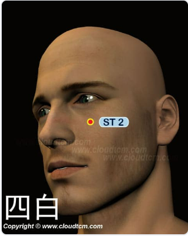

四白穴

位置：
在面部，瞳孔直下，當眶下孔凹陷處
按摩手法：
用食指指腹按揉四白穴100次，每天堅持能改善視力、防治眼疾（以雙手食指指端置於雙側四白穴處，同時沿順、逆時針方向各點揉8~12次。）
穴道介紹：
四白穴功效「散風明目，舒筋活絡」，主治目赤痛癢、目翳、眼瞼跳動、迎風流淚、頭面疼痛、口眼歪斜、眩暈、結膜炎、角膜炎、[面神經麻痹](https://health.tvbs.com.tw/review/322177)、三叉神經痛、膽道蛔蟲症，[青光眼](https://health.udn.com/health/story/6035/6140000)、白內障、黃斑部病變。
經常指壓四白穴，能提高眼睛機能，對於[近視](https://heho.com.tw/archives/21863)、色盲等眼部疾病很有療效。現代研究發現針刺四白穴可以治療三叉神經痛，也可以治療急性膽絞痛，效果顯著。
穴名介紹：
四，廣闊之意。白，光明也。本穴在目下一寸，主「戾目不明」，針此穴道可使目力復明，光明四射，故名。